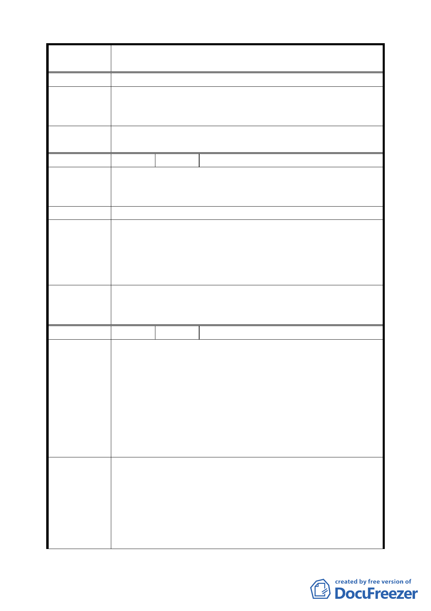

案 名 臺北市文山區都市計畫通盤檢討（細部計畫）案
費施工，擬請儘速編列預算，以符民意。
專案小組
審查結論
（94.7.7）
關於「住 2」調整使用為「住 3」之建議，全市仍有類似案例，
移請市府都市發展局通盤處理。
委員會議
決議
依專案小組審查結論辦理。
編 號 １０ 陳情人 李親民（09430075500）
陳情理由
（細興 4）
「細興 4」請維持原計畫 8 米道路（由興隆路 83 巷通往 166
巷），以免 156 巷以上社區住戶只唯一通路，以確保居民之交
通及生命財產安全。
建 議 辦 法 請排除萬難維持原計畫 8 米通道，而不是人行步道。
專 案 小 組 一、 基於消防安全，本計畫道路仍有開闢之必要，惟避免道
審查結論
路用地開闢需拆除民房，建議調整路型。
（94.7.25） 二、 同意本計畫道路依發展局建議方案。
（94.10.17） 附帶決議：基於消防安全考量，請市府儘速編列預算開闢周
（94.11.24）
邊道路。
委員會議
決議
依專案小組審查結論辦理，變更第三種住宅區為道路用地、
人行步道用地，並修正「細興 4」計畫內容及調整路型（維
持興隆路一段 55 巷 27 弄可供車行）。
編 號 １１ 陳情人 徐福進（09430071600、09430074500）
建議位置：興隆段三小段 31-1、31-3、88-6、101、106、106-1、
107-3、107-4 地號（興隆路一段 83 巷）。
建議理由：
陳情理由
（細興 4）
一、 本里為甕形社區，對外出入只有單一 8 米道路。
二、 道路要縮減，應讓消防車能通行，否則人民生命財產安
全，政府要負全責。
三、 「細興 4」南側第二種住宅區部分最陡，都能變更為住
宅用地，為何較平坦的不能闢為道路。
四、 故不同意中間部分縮減為 4 米人行步道。
一、 此道路為山邊道路，不要考量與其他道路銜接問題，只
要依現狀兩邊以現在高低起伏、中間需要開闢的土壤去
填補低窪地推平，道路一定很平坦。
建 議 辦 法 二、 若有拆遷補償，現住戶定能配合處理。
三、 細興東北側『ㄇ』型 6 米道路，總不能外面的道路比裡
面窄吧。
四、 施工可依一般民間開闢挖地下室方法先打鋼樁，再加支
三三